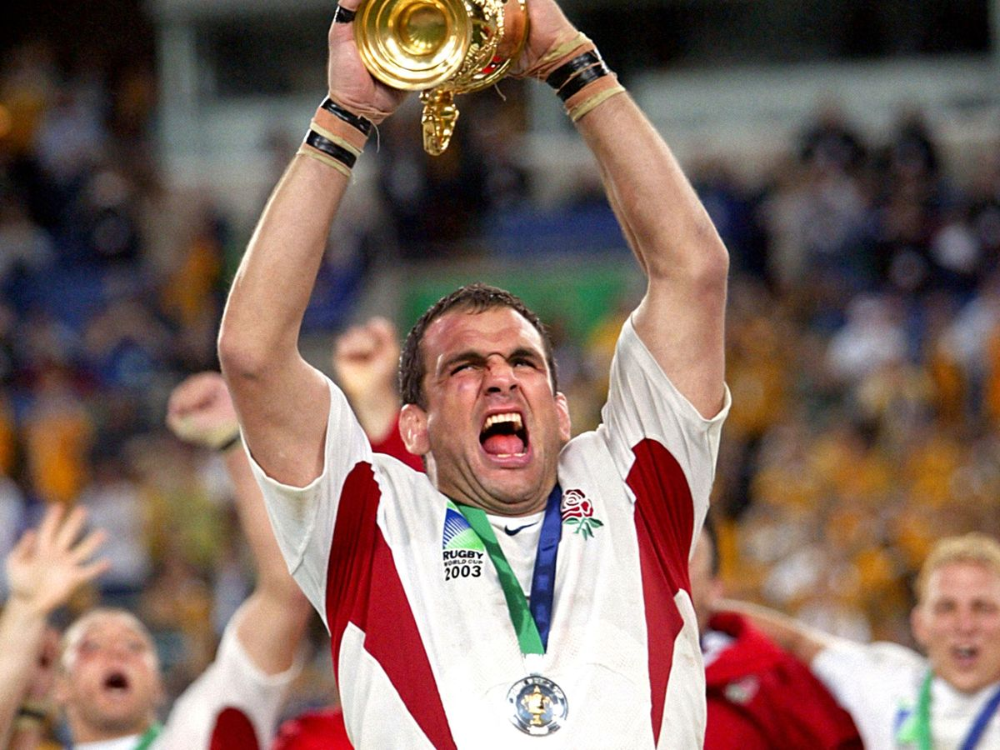

Johnny Wilkinson scoring a drop goal in the last minute of the 2003 World Cup Final to make England win their first World Cup against Australia.
England players passionately singing the English national anthem at Twickenham.

Chris Ashton scoring an important try with his trademark try scoring dive against New Zealand at Twickenham.

Elated captain Martin Johnson lifts the 2003 Rugby World Cup for the first time in England's history.
English wonderkid Henry Arundell scoring a try in the corner at Twickenham against France in the 2023 Six Nations.
England players pictured L-R: Freddie Steward, Jack Van Poortfliet, Ellis Genge and Marcus Smith.
Captain Owen Farrell lifting the 2020 Six Nations trophy surrounded by his England teammates.

Ellis Genge giving a pre-match speech to his England teammates before playing against Canada at Twickenham.
Centre Manu Tuilagi smirking at Twickenham audience after making a massive tackle.